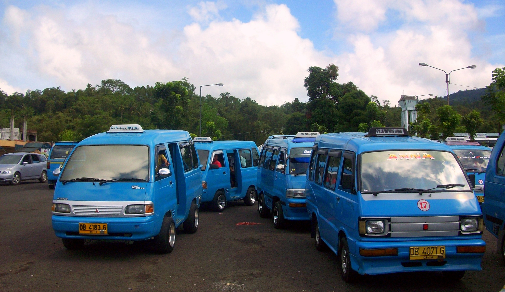

Ng-angkot
Ng-angkot
Home
Route
Angkutan Antar Kota Dalam Propinsi (AKDP)
Trayek Angkutan Dalam Kota
D 01 Terminal Depok - Depok I Dalam
D 02 Terminal Depok - Depok II Tengah/Timur
D 03 Terminal Depok - Parung
D 04 Terminal Depok - Beji - Kukusan
D 05 Terminal Depok - Citayam - Bojong Gede
D 06 Terminal Depok - Cisalak
D 07 Terminal Depok - Rawa Denok
D 08 Terminal Depok - BBM - Kp. Sawah
D 09 Terminal Depok - Studio Alam - Jatimulya
D 10 Terminal Depok - Desa Tengah
D 11 Terminal Depok - Akses UI - Palsigunung
D 15 Terminal Depok - Simpang Limo
D 17 Terminal Jatijajar - Cibubur
D 21 Terminal Sawangan - Bedahan - Duren Seribu
D 25 Terminal Sawangan - Pondok Petir - Curug
D 26 Terminal Sawangan - Citayam
D 27 Perum Arco - Sawangan - Cinangka
D 35 Ps. Palsigunung - Pangk. Sugutamu
D 35A Ps. Palsigunung - Ps. Cisalak
D 69 Cisalak - Pekapuran - Leuwinanggung